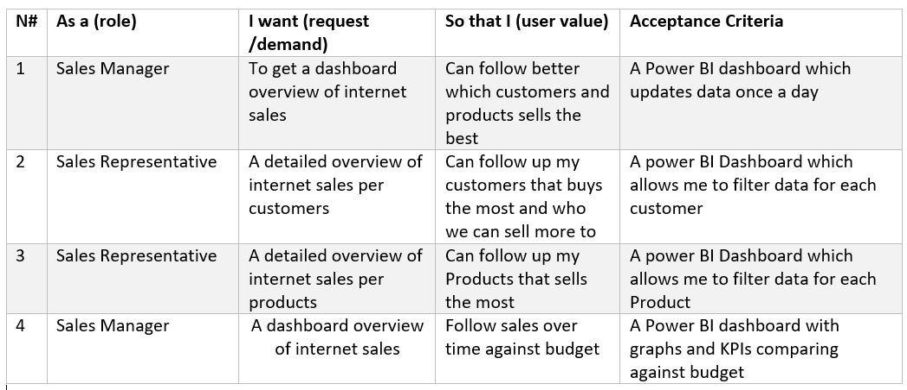

In this project, I used the AdventureWorks database—a sample dataset provided by Microsoft that simulates the operations of a fictional bicycle company—to dive deep into sales analytics. The goal was to transform raw data into actionable insights by leveraging SQL for data extraction and cleaning, followed by Power BI for visualization. Through this analysis, I explored trends in product sales, identified top customer segments, and examined regional performance. In this article, I'll walk you through the steps I took to create a dynamic sales dashboard, share key findings, and provide recommendations that could drive strategic decision-making for any business.
The business requested an executive sales report for sales managers as the primary deliverable for this data analyst project. Based on this request, the following user stories were defined to guide the project and ensure that the acceptance criteria were consistently met throughout its execution.

To create the necessary data model for analysis and to address the business needs outlined in the user stories, the following tables were extracted and prepared using SQL.
One data source, sales budgets, was provided in Excel format and integrated into the data model during a later stage of the process.
Below are examples of SQL statements used for data cleansing and transformation to ensure the data was ready for analysis.
-- Cleansed DIM_Customers Table --
SELECT
c.customerkey AS CustomerKey,
-- ,[GeographyKey]
-- ,[CustomerAlternateKey]
-- ,[Title]
c.firstname AS [First Name],
-- ,[MiddleName]
c.lastname AS [Last Name],
c.firstname + ' ' + lastname AS [Full Name],
-- Combined First and Last Name
-- ,[NameStyle]
-- ,[BirthDate]
-- ,[MaritalStatus]
-- ,[Suffix]
CASE c.gender WHEN 'M' THEN 'Male' WHEN 'F' THEN 'Female' END AS Gender,
-- ,[EmailAddress]
-- ,[YearlyIncome]
-- ,[TotalChildren]
-- ,[NumberChildrenAtHome]
-- ,[EnglishEducation]
-- ,[SpanishEducation]
-- ,[FrenchEducation]
-- ,[EnglishOccupation]
-- ,[SpanishOccupation]
-- ,[FrenchOccupation]
-- ,[HouseOwnerFlag]
-- ,[NumberCarsOwned]
-- ,[AddressLine1]
-- ,[AddressLine2]
-- ,[Phone]
c.datefirstpurchase AS DateFirstPurchase,
-- ,[CommuteDistance]
g.city AS [Customer City] -- Joined in Customer City from Geography Table
FROM
[AdventureWorksDW2022].[dbo].[DimCustomer] as c
LEFT JOIN dbo.dimgeography AS g ON g.geographykey = c.geographykey
ORDER BY
CustomerKey ASC -- Ordered List by CustomerKey
Below is a screenshot of the data model after the cleansed and prepared tables were loaded into Power BI.
This data model illustrates how FACT_Budget is connected to FACT_Sales_table and other relevant DIM tables, ensuring seamless integration for analysis.
The completed Sales Management Dashboard is designed with three pages to provide comprehensive insights. The Sales Overview page serves as a high-level dashboard, summarizing key metrics at a glance. The Customer Details page combines tables and visualizations to analyze sales trends by customer, while the Product Details page highlights sales performance over time, segmented by product. This structure ensures clarity and supports data-driven decision-making for sales managers.
The dashboard includes three views: Sales Overview, Customer Details, and Product Details. Here's an analysis of each: